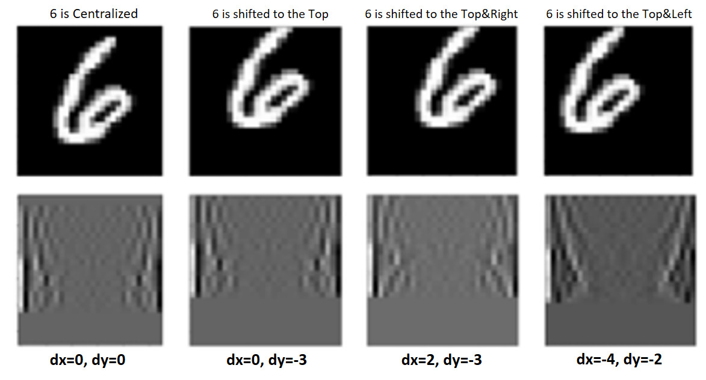
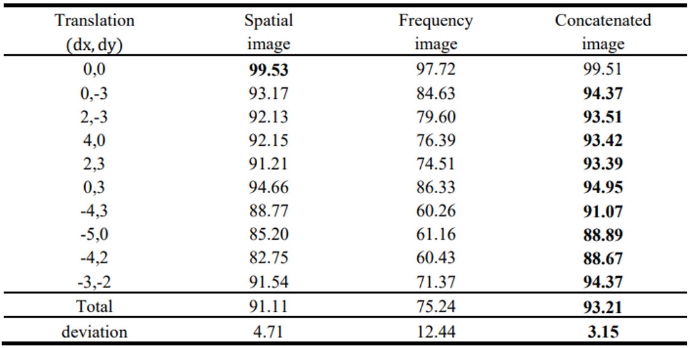

컨벌루션 신경망을 위한 푸리에 고속 변환을 사용하여 입력 채널 확장
모든 숫자는 MNIST에 집중되어 있습니다. 숫자가 중앙에서 벗어나면 정확도가 떨어집니다. 그러나 고속 푸리에 변환(FFT)은 중앙에 있는 이미지와 이동된 이미지 모두에서 유사한 주파수 특성을 가진 이미지를 생성할 수 있습니다(그림 1 참조). 해당 연구의 목표는 분류 결과를 개선하는 것이었습니다. 결과를 개선하기 위해 공간 또는 빈도 이미지 대신 "연결된" 이미지의 데이터세트가 학습됩니다. '연결된' 이미지를 생성하기 위해 공간 및 빈도 이미지의 채널이 결합됩니다(그림 2). "연결된" 이미지를 훈련한 후에는 표 1에 표시된 것처럼 공간 및 주파수 이미지보다 정확한 결과가 훨씬 더 좋습니다.
그림 1. 숫자 6의 공간 및 빈도 형태
- 기능:
- - MNIST 데이터세트
- - 고속 푸리에 변환
- - 연결.
- - 분류.
- - 등
그림 2. 공간 이미지를 주파수로 변환하고 공간 이미지와 주파수 이미지의 채널 연결
표 1. 공간, 빈도 및 연결 이미지의 정확도 결과